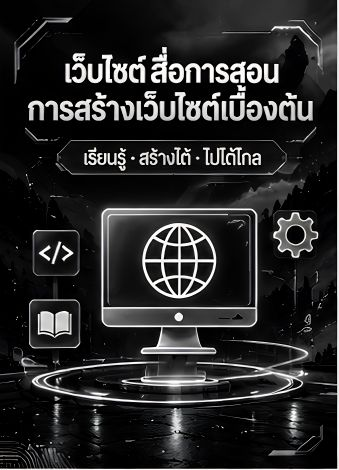
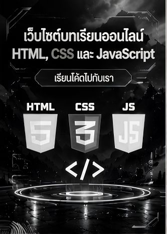
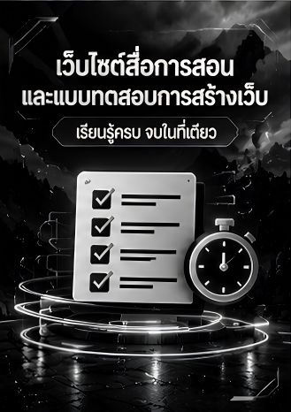
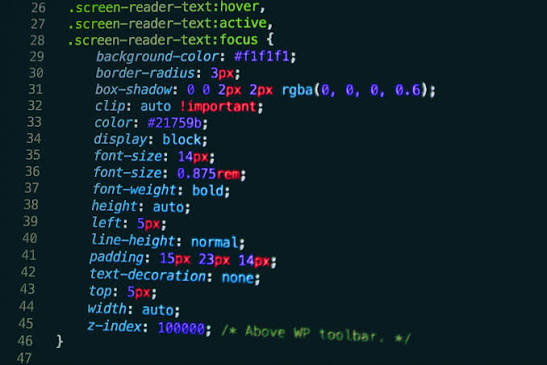
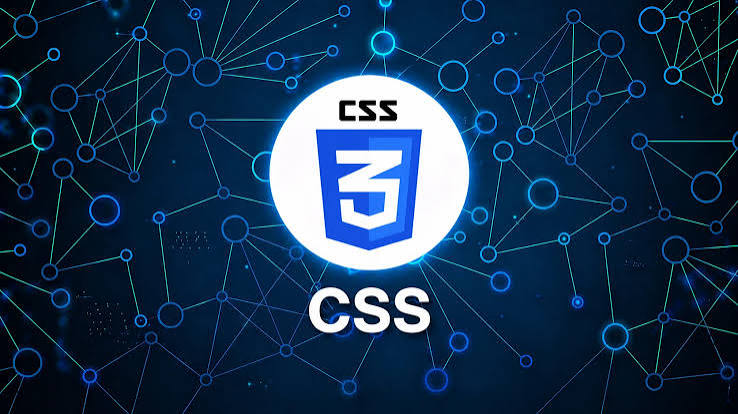

PROJECT
Introduction to Website Creation
Project on the Development of an Educational Website for an Introductory Web Design Course
Basic Website Development
ศึกษาเกี่ยวกับหลักการสร้างเว็บไซต์เบื้องต้น การใช้ภาษา HTML, CSS และ JavaScript ในการออกแบบและพัฒนาเว็บไซต์ การจัดวางเนื้อหา การตกแต่งหน้าเว็บ และการเพิ่มลูกเล่น เพื่อให้สามารถสร้างเว็บไซต์ที่สวยงาม ใช้งานง่าย และนำไปประยุกต์ใช้ได้จริง

เว็บไซต์สื่อการสอนการสร้างเว็บไซต์เบื้องต้น
ความรู้เบื้องต้นเกี่ยวกับความหมายของเว็บไซต์ ความแตกต่างระหว่างเว็บไซต์และเว็บเพจ ประเภทของเว็บไซต์ หลักการทำงาน Client-Server และเครื่องมือจำเป็นในการสร้างเว็บ

เว็บไซต์บทเรียนออนไลน์ HTML, CSS และ JavaScript
ศึกษาหัวใจหลักของเว็บเทคโนโลยี 3 ภาษา: HTML กำหนดโครงสร้างเอกสาร, CSS กำหนดสไตล์ความสวยงาม และ JavaScript เพิ่มพลังการโต้ตอบแบบไดนามิก
สื่อการเรียนรู้ออนไลน์ เรื่อง การพัฒนาเว็บไซต์เบื้องต้น
เรียนรู้ 7 ขั้นตอนมาตรฐานการพัฒนาเว็บไซต์ ตั้งแต่การวิเคราะห์ความต้องการ ออกแบบ Sitemap โครงสร้าง UI/UX การเขียนโค้ด การทดสอบ จนถึงการเผยแพร่และบำรุงรักษา
เว็บไซต์เพื่อการเรียนรู้การเขียนโค้ดสร้างเว็บ
เจาะลึกการใช้โปรแกรม Visual Studio Code โครงสร้างโฟลเดอร์โปรเจกต์มาตรฐาน การเขียน HTML เบื้องต้น การเชื่อมต่อ CSS/JS และการใช้ Developer Tools ตรวจสอบบัก
สื่อการสอนเชิงโต้ตอบ เรื่อง HTML, CSS และ JavaScript
เรียนรู้การเข้าถึง DOM และการดักจับ Event คลิก พิมพ์ ส่งฟอร์ม การสร้างปุ่มเปลี่ยนข้อความ ระบบแบบทดสอบ และระบบเปิด-ปิดเนื้อหาโต้ตอบ
เว็บแอปพลิเคชันสื่อการสอนการสร้างเว็บไซต์
ทำความเข้าใจความแตกต่างระหว่างเว็บไซต์และเว็บแอปพลิเคชัน สถาปัตยกรรม 3 ชั้น (Front-end, Back-end, Database) การออกแบบระบบสมาชิก และระบบฐานข้อมูลจัดการเรียนรู้
แพลตฟอร์มเรียนรู้การสร้างเว็บไซต์ด้วยตนเอง
หลักการเรียนรู้ด้วยตนเอง (Self-Directed Learning) การตั้งเป้าหมาย ตารางแผนการเรียนรู้ 8 สัปดาห์ เทคนิคการฝึกเขียนโค้ดให้มีประสิทธิภาพ และการประเมินผล

เว็บไซต์สื่อการสอนและแบบทดสอบการสร้างเว็บ
การสร้างระบบแบบทดสอบวัดผลสัมฤทธิ์ทางการเรียน: ประเภทข้อสอบ โครงสร้าง HTML แท็ก radio การเขียน JavaScript ตรวจคำตอบ สูตรคำนวณคะแนนร้อยละ และระบบ Pre-test/Post-test
สื่อมัลติมีเดียบนเว็บ เรื่อง การสร้างเว็บไซต์เบื้องต้น
การประยุกต์ใช้สื่อประสม (Multimedia): ข้อความ ภาพนิ่ง เสียง วิดีโอ และแอนิเมชัน แท็ก <img>, <video>, <audio> หลักการออกแบบสื่อการสอน และการหลีกเลี่ยงไม่ให้เว็บโหลดช้า
เว็บไซต์คู่มือฝึกปฏิบัติการเขียนโค้ดสร้างเว็บ
คู่มือฝึกปฏิบัติสร้างเว็บไซต์แนะนำตัวเองแบบ Step-by-Step รวมพลัง HTML + CSS + JS การตรวจสอบบักก่อนเผยแพร่ การขึ้นระบบ Hosting และเกณฑ์ประเมินผลงาน 6 ด้าน
Thank You for Watching
ขอขอบคุณทุกท่านที่ให้ความสนใจและเข้าเยี่ยมชมเว็บไซต์สื่อการเรียนการสอนของเราทางผู้จัดทำหวังเป็นอย่างยิ่งว่าเนื้อหาและสื่อการเรียนรู้ที่นำเสนอภายในเว็บไซต์นี้ จะเป็นประโยชน์ต่อการศึกษา ช่วยเพิ่มพูนความรู้ และสามารถนำไปประยุกต์ใช้ได้อย่างมีประสิทธิภาพ
HTML Web Structure & DOM
Click to view in LightboxHTML5 Modern Web Standards
Click to view in LightboxProgramming Fundamentals & Logic
Click to view in Lightbox
CSS Rules & Web Styling
Click to view in Lightbox